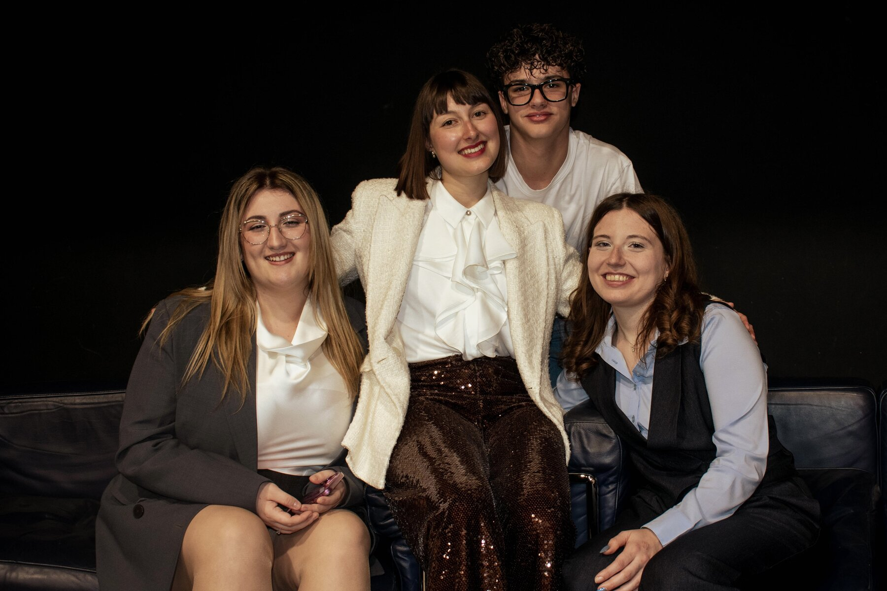

Il progetto
Com'è nato? E perché parliamo di fragilità?

«La fragilità è di tutti?» nasce dalla vittoria del bando Penso Giovane della Regione Lombardia. Il progetto è stato creato da Alice, Sindi ed Elisa con l'obiettivo di dare voce a ciò che troppo spesso viene nascosto: le fragilità, le disabilità e le storie di chi affronta ogni giorno sfide diverse.
In ogni episodio intervistiamo ospiti con esperienze molto differenti, che vivono a loro modo o sono a contatto con la fragilità, per promuovere una cultura dell'ascolto, dell'inclusione e dell'empatia.
A supportare il progetto c'è anche Andrea, il nostro tecnico e social media manager, che cura la produzione e la comunicazione del podcast.
Il team
Le voci del podcast
Alice
Sono cresciuta accanto a mio fratello, che ha l'autismo ed è più grande di me di due anni: un'esperienza che mi ha insegnato il valore dell'empatia, dell'ascolto e dell'inclusione, ispirandomi a dare voce alle fragilità attraverso questo podcast.
Sindi
Vivo di empatia, di sorrisi e mi piace circondarmi di bella energia! Con mio fratello ho imparato l'amore incondizionato. In questo podcast porto la mia sensibilità per dare voce alla mia realtà e a quella di tanti altri!
Elisa
Da sempre dedico parte del mio tempo alle mie sorelle, le mie prime amiche che giorno dopo giorno mi hanno insegnato cosa significa amare: donare. Ed è questo che voglio fare nella vita, donarmi.